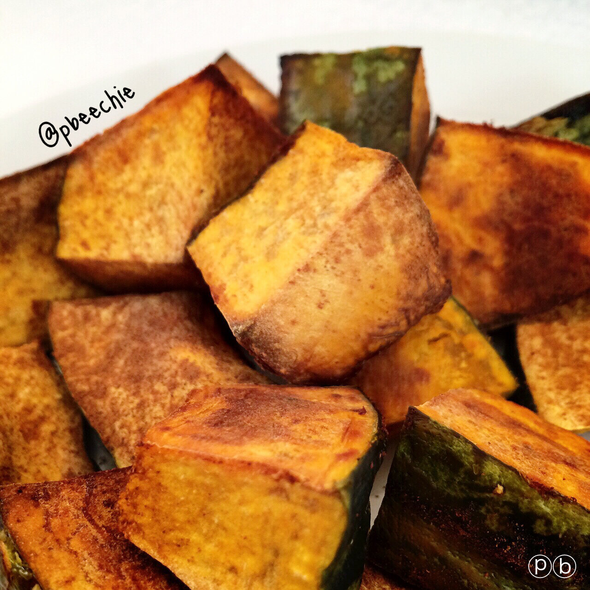

An Ode to Kabocha Squash
I have a (not so) secret addiction to kabocha squash. I first heard of this squash from other healthy living bloggers when I started to eat healthy. I didn't understand why people raved about it, so I found some and tried it. I... hated it. It was awful. I figured they were crazy. Months went by and I kept hearing great things about it so I tried it again. And fell madly in love. The first one was just cooked wrong.
It's been about a year and a half now and I have kabocha on the daily. The addiciton is real. I am now naturally orange from the beta-carotene in the squash (Free tan hayyyy). I actually legit tried to stop eating it but just can't do it D; So I embrace it. Pretty much if I don't post a meal or recipe or something, it's because I'm eating kabocha with nut butter. Basically. :pI was daydreaming at work yesterday as I set up SPME vials. And this ode to kabocha squash happened. People always say "idk how you come up with these recipes!" or "how do you think of this food?!" well. It's because of stuff like this XD My mind never rests. It's always racing and I always feel like it's going in overdrive. I'm always thinking about something and, more than likely, 3-5 things at once. Whether it's aboslutely pointless like this, or actually meaningful. My mind does not discriminate. Kind of a blessing and a curse at the same time.
Anyways. Behold, my ode.

An Ode to Kabocha SquashWith wallet in handI head to the storeTo find some kabochaI've been needing some moreI walk down the aislesMy eyes open greatTo see it's sold by the pound$1.98A hefty priceI'm willing to payAs long as it keepsThese cravings at bayI lug 6 squash homePut them on the tableThey're ready to chopAs long as I'm ableI grab my large knifeIt's restaurant gradeWithout this steel friendThe squash won't be madeTossed in cinnamonAnd set on a trayCubes roast in the ovenAt fahrenheit 42840 minutes go byYou're ready for meI see your crisped edgesAnd then shout with gleeBright orange fleshTinted brown from the ovenWith a warm, comfy centerLike french fries I'm lovinWhile one could roast sweet potatoesButternut or acornNo other veggieTastes quite like you're bornPerfect with nut butterOr protein fluffTo stop all consumptionSure would be toughMy skin has turned orangeFrom prolonged useBut bring me more squashMy addiction's profuse.